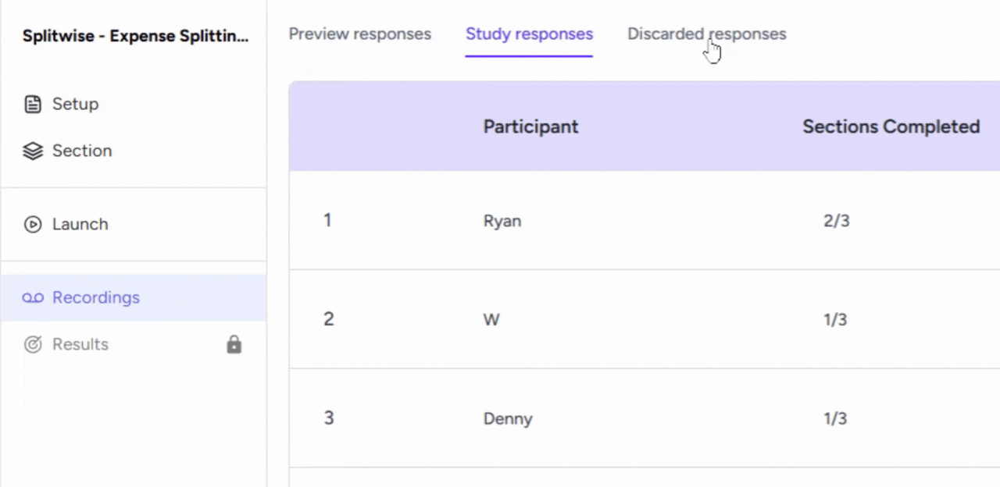
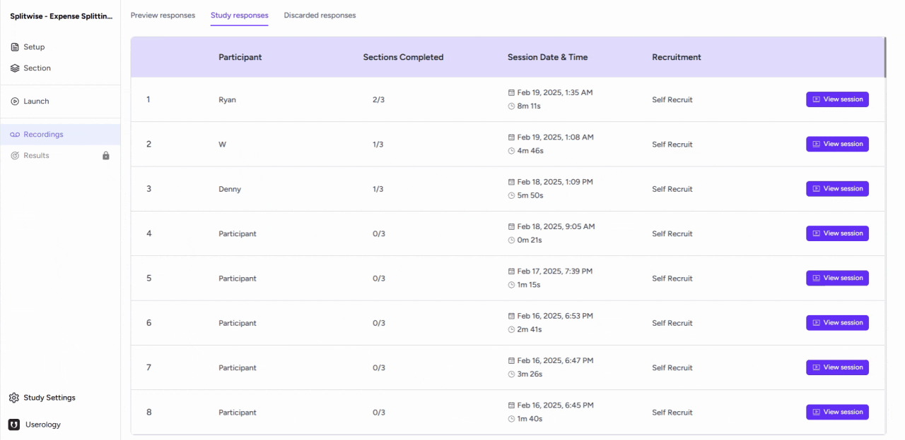
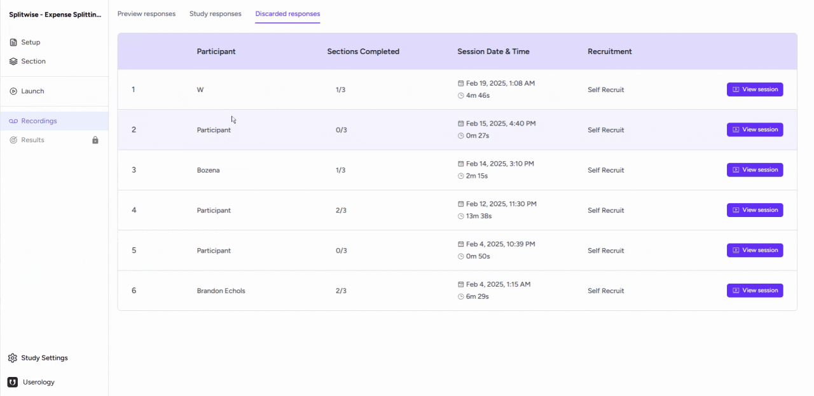

In this article, we will explore the different types of responses that are recorded in the Recordings tab of Userology.
We will cover:
- Preview responses
- Study responses
- Discarded responses
1. Preview Responses
To begin, navigate to the Recordings tab as shown in the screenshot below. Here you'll see the three tabs with different types of responses each.

In the Launch tab, you will find a button labeled 'Preview'. Before launching any study, it is recommended to test it out by clicking on this button. This allows you to experience the study from the participant's perspective and ensure everything is set up according to your needs.
All responses recorded during this preview phase are stored in the Preview section.

2. Study Responses
Next, let's look at the study responses.
Study responses are the live responses collected from the participants with whom you have shared the study link under the recruit yourself section in the Launch tab. These responses are crucial as they provide the actual data for your study.

3. Discarded Responses
Finally, let's understand discarded responses. For this, we'll go to a participant response.
To discard a participant's response, click the three-dot menu next to the share button and select 'Discard.' You will need to provide a reason for the discard. Once confirmed, the response will be moved to the discarded sessions, which you can view in the designated section. You can similarly discard any of the responses from preview section too.
If needed, you can restore a discarded video by clicking on the 'Restore' button. After restoring, the response will reappear in your study responses.

If you need further help, please email us at support@userology.co